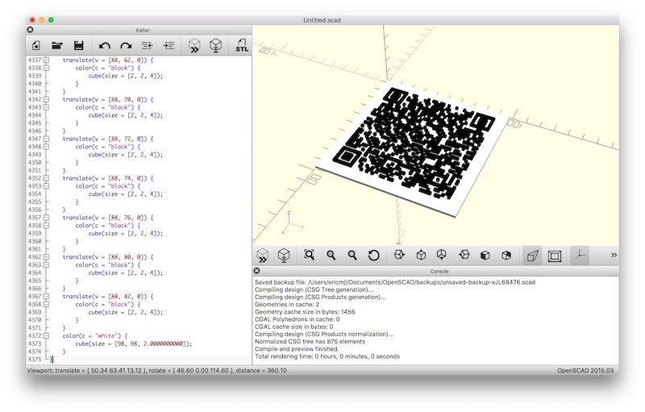

written by Eric J. Ma on 2018-09-02 | tags: 3d printing python qr code
In this blog post, I'll detail how to create a 3D printable QR code model using Python.
In the previous blog post, I detailed how to use pyqrcode to create a QR code for a WiFi string. The most important parts were:
WIFI:S:<SSID>;T:<WPA|WEP|>;P:<password>;;
import pyqrcode as pq ssid = "Family Guest Network" security = "WPA" password = "vn8h2sncu093y3nd!" qr = pq.create(f'WIFI:S:{ssid};T:{security};P:{password};;')
Now, let's see how we can create 3D models with Python code. We will need a package called SolidPython, and optionally numpy to help us with some array processing. (It can be done entirely using built-in lists if needed.)
To start, I first defined a convenience function that let me create and return a QRCode object that can be passed around and manipulated.
def create_wifi_qr(ssid: str, security: str, password: str): qr = pq.create(f'WIFI:S:{ssid};T:{security};P:{password};;') return qr
Its use will become evident later. You'll also notice I'm using type hints inside the function.
Using the function, we can create a text representation of the QR code:
qr = create_wifi_qr(ssid, security, password) print(qr.text())
This will give essentially a series of 1s and 0s. This is a string, though, not a numpy array. Hence, we may have to convert this into a list of lists, or a numpy array (as a user of the scientific Python stack, I prefer using arrays where possible, but in this case there is no real practical advantage to doing so because we are not doing linear algebra).
Let's now define a function that takes in the QRCode object and return an array version of the text rendering.
def qr2array(qr): arr = [] for line in qr.text().split('\n'): if len(line) != 0: arr.append([int(bit) for bit in line]) return np.vstack(arr)
With that, we can create an array version of our QR code above:
arr = qr2array(qr)
Now, we're ready to play with SolidPython!
SolidPython is a Python package that provides an interface to the OpenSCAD language. The OpenSCAD language allows a programmer to programmatically define 3D models using the language of geometry. This includes the creation of cubes and other 3D objects, as well as object manipulations, such as translation, coloring, and union-ing.
For brevity, I'll not introduce you to more detail on what OpenSCAD is. Rather, I'll recommend two readings, to be read in order:
Take a look at the code below for an example of how we create the 3D object.
from solid import color, cube, scad_render, translate, union SCALE = 2 # output defaults to 1 mm per unit; this lets us increase the size of objects proportionally. cubes = [translate([i*SCALE, j*SCALE, 0])(color('black')(cube(size=[SCALE, SCALE, HEIGHT]))) for i, row in enumerate(arr) for j, col in enumerate(row) if arr[i, j] == 1] base_plate = color('white')(cube(size=(arr.shape[0] * SCALE, arr.shape[1] * SCALE, HEIGHT / 2))) qrobj = union()(*cubes, base_plate) print(scad_render(qrobj))
This will give the following OpenSCAD code, which I've truncated for brevity:
union() {
translate(v = [8, 8, 0]) {
color(c = "black") {
cube(size = [2, 2, 4]);
}
}
translate(v = [8, 10, 0]) {
color(c = "black") {
cube(size = [2, 2, 4]);
}
...
translate(v = [88, 80, 0]) {
color(c = "black") {
cube(size = [2, 2, 4]);
}
}
translate(v = [88, 82, 0]) {
color(c = "black") {
cube(size = [2, 2, 4]);
}
}
color(c = "white") {
cube(size = [98, 98, 2.0000000000]);
}
}
What we've done here is take the 1s and created cubes where they are supposed to be, and leave the zeros empty. Then, we add a "base plate" so that everything stays nice and connected, and finally union all of the cubes with the base plate, so that we get one solid piece that is 3D printed.
If you observe the output of the function scad_render, it will essentially be valid OpenSCAD text. With OpenSCAD text, you can paste it into OpenSCAD to render it:

Following that, it can be exported as an STL file. The export process in OpenSCAD takes some time, but once done, it then has to be first converted into a .gcode file, which gives a 3D printer the necessary instructions to move its printhead around to print the QR code.
In short, the flow is:
SolidPython -> OpenSCAD -> STL -> .gcode
The key things to take away from this blog post are:
Now that you have an example of how to create an OpenSCAD file from Python using SolidPython, I hope you'll go forth and make a ton of fun stuff!